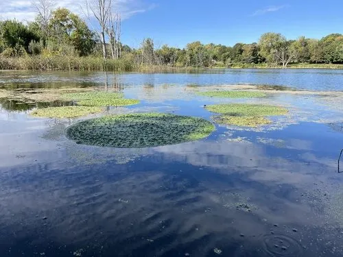

水生植物 · 植物界
芡实 Euryale ferox

睡莲科一年生大型浮叶水生草本，全株带刺，种子俗称鸡头米，可食用入药，中国江南水乡传统栽培。
- 分类
- 门被子植物门纲木兰纲目睡莲目科睡莲科属芡属
- 栖息环境
- 池塘、湖泊与浅水沼泽，喜温暖、阳光充足、水位稳定
- 地理分布
- 原产东亚，中国长江中下游及华南水乡广泛栽培，印度也有分布
- 保护级别
- 暂无评估
物种志
芡实为睡莲科芡属一年生大型浮叶水生草本，根须发达，茎短缩。叶片大，浮于水面，圆形，直径可达 1–2 米，叶面绿色、有皱褶，叶背紫红色，叶脉和叶柄上密生尖刺。花单生，紫红色，浮于水面或稍挺出水面，花期 7–8 月；果实球形，顶端有宿存萼片，形似鸡头，密被刺，果期 8–10 月。
芡实原产东亚，中国、印度等地都有分布，生于池塘、湖泊和浅水沼泽，喜温暖、阳光充足和水位稳定的环境。它的种子俗称鸡头米、芡实米，富含淀粉和蛋白质，可煮粥、煲汤，是江南水乡的传统食材，中医也把它入药，有健脾益肾之效。采摘芡实需在果实成熟前割取，剥去带刺的外壳和内膜，取种仁晒干，江苏苏州的葑门鸡头米尤为有名。
形态与习性
- 株高浮叶直径 1–2 米
- 花期7–8 月，花紫红色
- 果期8–10 月，果实形似鸡头，密被刺
- 光照极喜光，需全日照
- 水分水深 30–100 厘米，喜静水
- 土壤富含腐殖质的肥沃塘泥
- 繁殖以播种繁殖为主
- 主要用途种仁即鸡头米食用、入药
趣味知识
- 芡实果实顶端有宿存萼片、形似鸡头，所以种子俗称“鸡头米”。
- 它结的果实外壳和叶背都密生尖刺，采收时必须戴手套割取。
- 芡实种仁富含淀粉和蛋白质，是江南水乡的传统食材。
- 江苏苏州的葑门鸡头米以粒大、软糯闻名，是秋季时令特产。